Wave Properties
1.) Study the diagram carefully. It shows a wave with three distances marked 'X', 'Y' and 'Z' respectively. Which of the statements below correctly describes the distance stated?
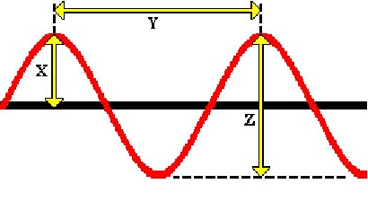
2.) Which of the following statements is NOT true about wave features?
3.) The diagram shows a spring that can be moved in two directions, 'X' and 'Y'. Which of the answers below correctly shows the type of waves produced by each hand movement?
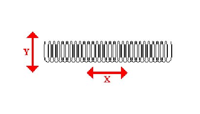
4.) Light waves are transverse. What does this mean?
5.) Which of the following waves is a longitudinal wave?
6.) Which of the statements below is correct about waves?Sound Waves (Module 6)
(Module 6) 7.) Sound waves travel at various speeds in different substances. Which of the following statements is NOT true? 8.) Which of the following statements is NOT true about hearing? 9.) Noise pollution can cause stress and distraction. Which of the following statements is NOT true about methods of reducing noise pollution? 10.) How are echoes caused? 11.) The following answers are four terms which may be used when referring to a wave. Which one of the terms is related most closely to loudness in the case of a sound wave? 12.) A loudspeaker consists of a cone which vibrates to and fro. If the cone is made to vibrate with a bigger amplitude, what would the effect be on the sound produced? 13.) Which of the following statements is NOT true about the frequency of a sound wave? 14.) A steel wire is stretched over a pulley by a large mass. When the wire is plucked, it emits a sound. What will happen to the pitch of this sound if the mass on the wire is increased? 15.) Study the graphs carefully. They show how the displacement of air molecules changed with time when different sound waves were passing. The scales are the same for each graph. Which graph shows the sound with the biggest amplitude?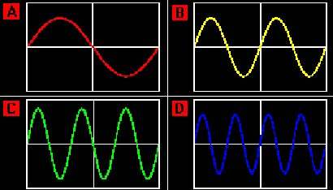
16.) The graphs show how the displacement of air molecules changed with time when different sound waves were passing. The scales are the same for each graph. Which graph shows the sound with the highest frequency?17.) The graphs show how the displacement of air molecules changed with time when different sound waves were passing. The scales are the same for each graph. Which graph shows the sound with two wavelengths?
18.) Microphones turn sound waves into electrical signals. Which of the following statements is NOT true?
Ultrasound (Module 6)
(Module 12) 19.) Ultrasound can be used for industrial cleaning. Which of the following statements is NOT true? 20.) Ultrasound can be used for industrial quality control. Which of the following statements is NOT true? 21.) Which of the following type of waves is the safest to use to produce an image of a foetus? 22.) Bats are known to navigate by bouncing high pitched sound waves off objects in front of them and then detecting the waves coming back. What feature of sound waves does the bat rely upon in doing this?Wave Formulae (Module 12)
(Module 6) 23.) Some water ripples on a pond travel 55cm in 5 seconds. What is their speed? 24.) The frequency and wavelength of a sound wave are measured underwater. These measurements are taken to be 2.5kHz and 56cm respectively. Using these figures, what speed do sound waves travel through water? 25.) A wave has a frequency of 50Hz. How long does it take for the wave to complete one full cycle? 26.) A gun is sounded and an echo received from a wall 6 seconds later. If the speed of sound is 330m/s, how far away is the wall? 27.) A fisherman sitting on the end of a pier notices that 6 wave crests pass him in 3 seconds. What is the frequency of the waves? 28.) You notice that when someone bursts a balloon some distance away from you, there is a delay between seeing and hearing it burst. Why is this?Reflection (Module 6)
(No Module) 29.) The diagrams show waves being reflected in a ripple tank. The incident waves are shown in red and the reflected waves in blue. Where indicated in 'C' and 'D', the reflected waves appear to radiate from the position of the ‘image’. Which of the diagrams does NOT show the correct reflected wave?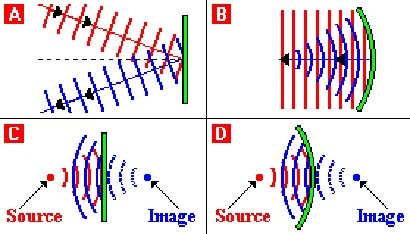
30.) Which of the following statements is NOT true about the reflection of light? 31.) The diagram shows a ray of light reflected from a plane mirror. What is the angle of incidence?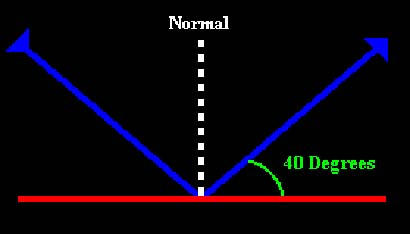
Mirrors and Lenses (No Module)
(Module 6) 32.) When you look at yourself in a plane mirror, what characteristics does your image have? 33.) Which of the statements about the image formed in a plane mirror is true? 34.) The driver of a car sees an image of his car's headlights in a shop window. The shop window is 20m from the car. How far from the car is the image of the headlights? 35.) Which of the following describes the image formed on the retina of the human eye? 36.) Which of the following describes the image formed in a pinhole camera by a close and upright object? 37.) Which one of the following statements about the image produced in a pinhole camera is correct? 38.) When the human eye is compared to a camera, which of the following is true? 39.) Study the diagrams carefully. They show rays of light passing through two different optical instruments. What are the instruments 'X' and 'Y' likely to be?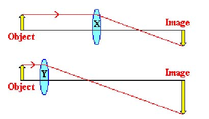
40.) When a person with a sight defect looks at a distant object, the image of the object is formed in front of the retina. What condition is this person suffering from and how might it be corrected?Refraction (Module 6)
(Module 12) 41.) The diagram shows the path a light ray takes from an object on the bottom of a swimming pool. Which property of light should be used to describe the path of the light ray?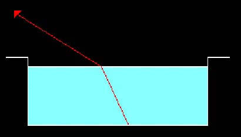
42.) As a ray of light passes at an oblique angle from air into glass, which of the following statements below is NOT true? 43.) Which one of the following is true when a light wave passes from air into water? 44.) Study the diagram carefully. When a light ray hits an air/water boundary, it changes direction. In which direction will it get refracted?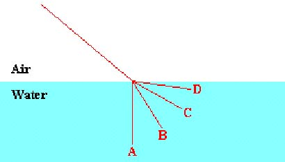
45.) Which of the following statements is NOT true about refraction? 46.) When white light passes through a prism, it splits up into many colours. What is the name of this process? 47.) The diagram shows a ray of light of one colour entering a glass prism. In which direction will the ray leave the prism?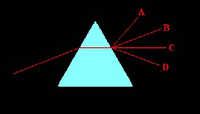
48.) Study the diagram carefully. When white light passes through a prism, it splits up into many colours. Which colours are labelled 'X' and 'Y'?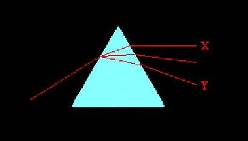
49.) Which of the following statements is NOT true about dispersion? 50.) Which of the following statements is NOT true about total internal reflection? 51.) The diagrams show light rays entering glass blocks and then being refracted as they leave. The angle of incidence is represented with the letter 'i' and the angle of reflection by 'r'. 'c' represents the critical angle (42 degrees for glass). The lighter coloured lines are faint reflected rays. Which diagram does NOT show the correct path of the light ray?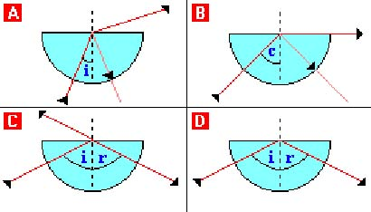
52.) Which of the following does NOT use 45 degree prisms to create total internal reflections? 53.) Optical fibres are used in communications and endoscopes. Which of the following statements is NOT true? 54.) Which of the following is an optical fibre instrument that is used in operations without the need of cutting big holes in the patient?Diffraction (Module 12)
(Module 6) 55.) The diagram shows water waves spreading out as they pass through a narrow slit. What is this effect called?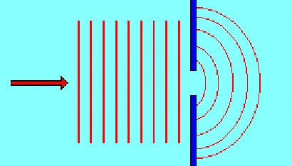
56.) Diffraction is the spreading out which occurs when waves pass through a narrow gap or around a narrow object. For this spreading out to be most significant, how should the wavelength of the wave be related to the width of the gap? 57.) Diffraction is the spreading out which occurs when a wave passes through a narrow gap. What happens to the velocity, wavelength and frequency of the waves when this happens? 58.) Most sounds have wavelengths of 0.1 metres in air. Why when you hear sounds from around corners do they sound 'muffled'?The Electromagnetic Spectrum (Module 6)
(Module 11) 59.) Light is a form of electromagnetic radiation. Which statement about light waves is NOT true? 60.) Which of the types of radiation listed below has a wavelength slightly shorter than that of visible light and can cause certain materials to fluoresce? 61.) Which of the types of radiation listed below has a wavelength slightly longer than that of visible light and can be used for heating? 62.) The diagram shows the various parts of the electromagnetic spectrum, in order of decreasing wavelength from left to right. What should be placed in the positions labelled 'X' 'Y' and 'Z'?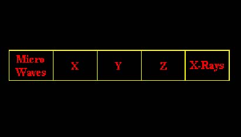
63.) The following are four terms which may be used when referring to a wave. Which one of the terms has the same value for all electromagnetic waves when travelling in a vacuum? 64.) When a star reaches a certain point in its life, it may explode and become a supernova. When it does this, it gives out energy in the form of waves which travel to the Earth through Space. Which of these could NOT be received from the star? 65.) Which of the following statements is NOT true about electromagnetic waves? 66.) Which of the following statements is NOT true about radio waves? 67.) Radio waves are used to transmit information. Which of the following statements is NOT true? 68.) Which of the following statements is NOT true about microwaves? 69.) Infrared is also known as heat radiation. Which of the following statements is NOT true? 70.) Which of the following statements is NOT true about visible light? 71.) Which statement about electromagnetic radiation is NOT true? 72.) Which statement about the production of electromagnetic radiation is NOT true?Seismic Waves (Module 11)
73.) What creates seismic waves? 74.) What are seismic waves detected with? 75.) There are two types of seismic wave. What are they? 76.) The diagrams show different paths that a wave takes through the Earth. The red areas indicate areas where no shock waves are detected at the surface of the Earth. Which diagram correctly shows the paths that an S-Wave takes through the Earth?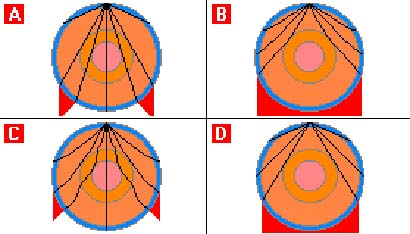
77.) The diagrams show different paths that a wave takes through the Earth. The red areas indicate areas where no shock waves are detected at the surface of the Earth. Which diagram correctly shows the paths that a P-Wave takes through the Earth?78.) Results from seismographs show that about halfway through the Earth there is a sudden change in direction of both types of seismic waves. Also, S-Waves are not detected in a large area opposite the place where the seismic waves are created. What does this indicate? 79.) Results from seismographs show that P-Waves travel slightly faster through the middle of the core. What does this suggest? 80.) Which of the following statements is NOT true about seismic waves passing through the Earth?
Mixed bag
81.) When you run up a flight of stairs, you measure your heart rate to be 110 beats per minute. What is the frequency of your heartbeat? 82.) Sound waves travel 330 metres per second in air. How long does it take a sound wave to travel one kilometre? 83.) Study the diagrams carefully. Which wave diagram correctly shows diffraction?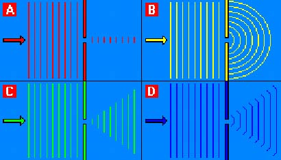
84.) Study the diagrams carefully. Which one shows the direction that a light ray takes when it passes from air through a rectangular glass block?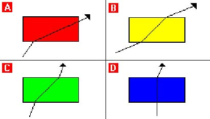
85.) Which of the following statements about waves is true? 86.) Study the graphs carefully. They show how the displacement of air molecules changed with time when different sound waves were passing. The scales are the same for each graph. Which graph shows the sound with the shortest wavelength?87.) A loudspeaker gives out a note of wavelength 0.66 metres. The speed of sound is 330 metres per second. What is the frequency of the sound? 88.) Which of the following is NOT true for X-rays? 89.) The time period of a wave is measured to be 0.0125 seconds. What is the frequency of this wave? 90.) From the list below, which type of electromagnetic radiation has the shortest wavelength? 91.) Waves on the surface of a pond are observed to travel a distance of 80cm in 3s. If the distance apart of the crests is 5cm, what is the frequency of these waves? 92.) The diagram shows a person at the side of a swimming pool looking down at an object in the water. If he is looking in the direction shown, where does the object appear to be?
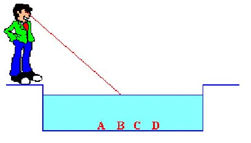
93.) The sound from a car horn takes 0.1 seconds to reach a person stood in the road. If sound travels at 330m/s in air, how far away is the person from the car? 94.) Which of the instruments listed below is used to detect electromagnetic radiation which has a wavelength between that of infrared and ultra violet radiation? 95.) A drum is hit and an echo is received from a house that is 660 metres away. If the speed of sound in air is 330 metres per second, how long does it take before the echo is heard? 96.) Which of the following statements is NOT true about gamma rays? 97.) Study the diagram carefully. It shows the arrangement used for testing a person's eyes at the opticians. The person being tested stands at the position labelled 'P', facing the mirror. The test card is 0.5m behind the person. If the person is 2.5m from the mirror, how far is the image of the test card from this person's eyes?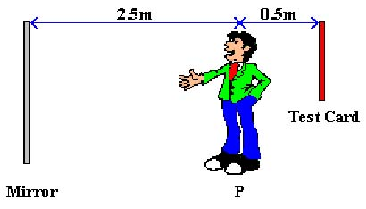
98.) A boy can hear sounds which range in frequency from 30Hz to 20,000Hz. What is the longest wavelength the boy can hear if the velocity of sound in air is 330m/s? 99.) The graphs show how the displacement of air molecules changed with time when different sound waves were passing. The scales are the same for each graph. Which graph shows the sound with the lowest pitch?100.) Which of the following statements about ultra violet light is NOT true?
0
Wrong:
0
Attempts:
0